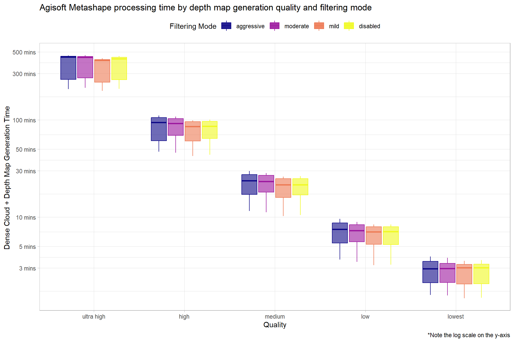
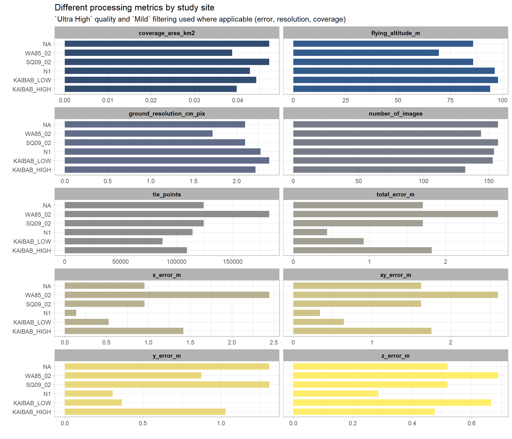
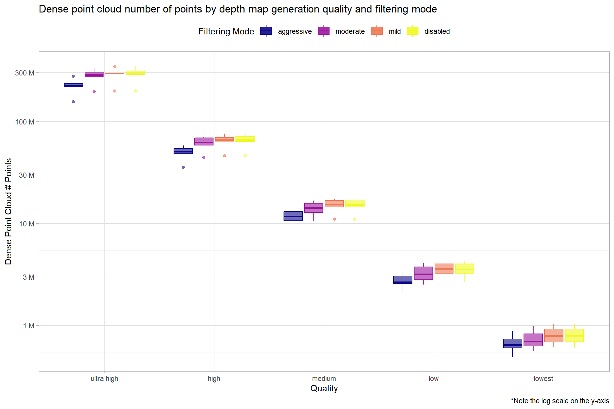

Section 2 SfM Image Processing Data
This section extracts data from the SfM image processing software reports (usually in pdf format) and reports summary statistics on processing time.
2.1 User-Defined Parameters
Parameters to be set by the user
# !!!!!!!!!!!!!!!!!!!!!!! USER-DEFINED PARAMETERS !!!!!!!!!!!!!!!!!!!!!!! #
###____________________###
### Set directory for outputs ###
###____________________###
# rootdir = "../data"
rootdir = "../data"
###_________________________###
### Set pdf data directory ###
###_________________________###
# !!!!!!!!!! this is where pdf report data resides
# !!!!!!!!!! files should be named in the format {quality}_{depth map filtering}.pdf
# !!!!!!!!!! for example: high_aggressive.pdf; UltraHigh_Disabled.pdf; lowest_MILD.pdf
pdf_report_dir = "../data/raw_data"
###_________________________###
### Set point cloud processing data directory ###
###_________________________###
# !!!!!!!!!! this is where the outputs of the software_point_cloud_processing.R script are located
# !!!!!!!!!! script will look for "processed_tracking_data\\.csv" files
ptcld_processing_dir = "D:/SfM_Software_Comparison"
###_________________________###
### list of study site directory names
###_________________________###
# !!!!!!!!!! this is where both pdf and las data reside
# directories matching the names of these study sites will be searched
# arrange processed data in file structure that includes the software and the site
# ... with the processing attributes in the file name
# ex: "../metashape/N1/high_aggressive_processed_tracking_data.csv"
# what sites to look for?
study_site_list = c(
"SQ09_02", "WA85_02"
, "Kaibab_High", "Kaibab_Low"
, "n1"
# , "SQ02_04" # SQ09_02 and SQ02_04 have same imagery?
)
# what softwares to look for?
software_list = c("metashape", "pix4d", "opendronemap")
# !!!!!!!!!!!!!!!!!!!!!!! USER-DEFINED PARAMETERS !!!!!!!!!!!!!!!!!!!!!!! #2.2 Metashape Image Processing
Search for the list of Agisoft Metashape processing report pdf files to extract information from in the user-defined pdf_report_dir directory. Parse the list of files to extract processing information and study site information from.
# get list of files and directories to read from
pdf_list = list.files(normalizePath(pdf_report_dir), pattern = ".*\\.(pdf)$", full.names = T, recursive = T)
# set up data.frame for processing
pdf_list_df = dplyr::tibble(
file_full_path = pdf_list
) %>%
dplyr::mutate(
study_site = file_full_path %>%
stringr::word(-1, sep = fixed(normalizePath(pdf_report_dir))) %>%
toupper() %>%
stringr::str_extract(pattern = paste(toupper(study_site_list),collapse = "|"))
, quality_filtering = file_full_path %>%
stringr::word(-1, sep = fixed("/")) %>%
stringr::word(1, sep = fixed(".")) %>%
toupper()
, metashape_quality = quality_filtering %>% stringr::word(1, sep = fixed("_"))
, metashape_depthmap_filtering = quality_filtering %>% stringr::word(-1, sep = fixed("_"))
)
# pdf_list_df
pdf_list_df %>%
dplyr::select(-file_full_path) %>%
dplyr::slice_sample(n=15) %>%
dplyr::arrange(study_site,quality_filtering) %>%
kableExtra::kbl(caption=paste0("Sample of study site reports extracted from raw data directory (", nrow(pdf_list_df), " files detected)")) %>%
kableExtra::kable_styling()| study_site | quality_filtering | metashape_quality | metashape_depthmap_filtering |
|---|---|---|---|
| KAIBAB_HIGH | LOWEST_AGGRESSIVE | LOWEST | AGGRESSIVE |
| KAIBAB_HIGH | LOW_AGGRESSIVE | LOW | AGGRESSIVE |
| KAIBAB_HIGH | LOW_MODERATE | LOW | MODERATE |
| KAIBAB_HIGH | MEDIUM_AGGRESSIVE | MEDIUM | AGGRESSIVE |
| KAIBAB_HIGH | MEDIUM_MILD | MEDIUM | MILD |
| KAIBAB_LOW | ULTRAHIGH_AGGRESSIVE | ULTRAHIGH | AGGRESSIVE |
| SQ09_02 | LOW_MILD | LOW | MILD |
| SQ09_02 | LOW_MODERATE | LOW | MODERATE |
| SQ09_02 | MEDIUM_MILD | MEDIUM | MILD |
| WA85_02 | LOWEST_AGGRESSIVE | LOWEST | AGGRESSIVE |
| WA85_02 | LOWEST_MODERATE | LOWEST | MODERATE |
| WA85_02 | LOW_AGGRESSIVE | LOW | AGGRESSIVE |
| WA85_02 | LOW_MODERATE | LOW | MODERATE |
| WA85_02 | MEDIUM_AGGRESSIVE | MEDIUM | AGGRESSIVE |
| WA85_02 | ULTRAHIGH_MILD | ULTRAHIGH | MILD |
2.2.1 Metashape Report PDF Data Extraction
Define function to extract data from the Agisoft Metashpae pdf reports
### function to extract time value
parse_time_value_fn <- function(val) {
val = tolower(val)
# seconds
seconds = dplyr::case_when(
stringr::str_detect(val, pattern = "seconds") ~ stringr::word(val, start = 1, sep = "seconds") %>%
stringr::str_squish() %>%
stringr::word(start = -1)
, T ~ "0"
) %>%
as.numeric()
# minutes
minutes = dplyr::case_when(
stringr::str_detect(val, pattern = "minutes") ~ stringr::word(val, start = 1, sep = "minutes") %>%
stringr::str_squish() %>%
stringr::word(start = -1)
, T ~ "0"
) %>%
as.numeric()
# hours
hours = dplyr::case_when(
stringr::str_detect(val, pattern = "hours") ~ stringr::word(val, start = 1, sep = "hours") %>%
stringr::str_squish() %>%
stringr::word(start = -1)
, T ~ "0"
) %>%
as.numeric()
# combine
time_mins = (seconds/60) + minutes + (hours*60)
return(time_mins)
}
### function to extract memory value
parse_memory_value_fn <- function(val) {
val = tolower(val)
# kb
kb = dplyr::case_when(
stringr::str_detect(val, pattern = "kb") ~ stringr::word(val, start = 1, sep = "kb") %>%
stringr::str_squish() %>%
stringr::word(start = -1)
, T ~ "0"
) %>%
as.numeric()
# mb
mb = dplyr::case_when(
stringr::str_detect(val, pattern = "mb") ~ stringr::word(val, start = 1, sep = "mb") %>%
stringr::str_squish() %>%
stringr::word(start = -1)
, T ~ "0"
) %>%
as.numeric()
# gb
gb = dplyr::case_when(
stringr::str_detect(val, pattern = "gb") ~ stringr::word(val, start = 1, sep = "gb") %>%
stringr::str_squish() %>%
stringr::word(start = -1)
, T ~ "0"
) %>%
as.numeric()
# combine
mem_mb = (kb/1000) + mb + (gb*1000)
return(mem_mb)
}
# read each agisoft metashape report pdf and extract metrics
extract_metashape_report_data_fn <- function(file_path) {
# read the pdf
pdf_text_ans = pdftools::pdf_text(file_path)
##############################
# pull data out
##############################
######################################
### page 4 table
######################################
table_st_temp = pdf_text_ans[4] %>%
stringr::str_locate("X error") %>%
.[1,1]
table_end_temp = (pdf_text_ans[4] %>%
stringr::str_locate("Table 3") %>%
.[1,1])-1
# matrix
table_rows_temp = pdf_text_ans[4] %>%
substr(
start = table_st_temp
, stop = table_end_temp
) %>%
stringr::str_split(pattern = fixed("\n"), simplify = T) %>%
trimws()
# are units in m or cm?
use_m_or_cm = dplyr::case_when(
stringr::str_detect(table_rows_temp[1,1], "\\(m\\)") ~ "\\(m\\)"
, stringr::str_detect(table_rows_temp[1,1], "\\(cm\\)") ~ "\\(cm\\)"
, T ~ ""
)
# pull names
names_temp = table_rows_temp[1,1] %>%
stringr::str_split(pattern = use_m_or_cm, simplify = T) %>%
trimws() %>%
stringi::stri_remove_empty_na() %>%
stringr::str_replace_all("\\s","_") %>%
tolower()
# pull data
page4_dta_temp = table_rows_temp[1,2:ncol(table_rows_temp)] %>%
stringr::str_replace_all("\\s{2,}", ",") %>%
stringi::stri_remove_empty_na() %>%
textConnection() %>%
read.csv(
sep = ","
, header = F
, col.names = names_temp
) %>%
dplyr::as_tibble() %>%
dplyr::mutate(
dplyr::across(
.cols = tidyselect::everything()
, .fns = ~ dplyr::case_when(
use_m_or_cm == "\\(m\\)" ~ .x
, use_m_or_cm == "\\(cm\\)" ~ .x/100
, T ~ as.numeric(NA)
)
)
) %>%
dplyr::rename_with(~ paste0(.x,"_m", recycle0 = TRUE))
######################################
### page 6 table
######################################
page6_dta_temp =
pdf_text_ans[6] %>%
stringr::str_remove("Processing Parameters\n\n") %>%
stringr::str_split(pattern = fixed("\n"), simplify = T) %>%
trimws() %>%
stringr::str_replace_all("\\s{2,}", "|") %>%
textConnection() %>%
read.csv(
sep = "|"
, header = F
, col.names = c("var", "val")
) %>%
dplyr::as_tibble() %>%
dplyr::mutate(
val = val %>% stringr::str_squish() %>% tolower()
, is_header = is.na(val) | val == ""
, heading_grp = cumsum(is_header)
) %>%
dplyr::group_by(heading_grp) %>%
dplyr::mutate(
heading_nm = dplyr::first(var) %>%
tolower() %>%
stringr::str_remove_all("parameters") %>%
stringr::str_squish() %>%
stringr::str_replace_all("\\s", "_")
) %>%
dplyr::ungroup() %>%
dplyr::mutate(
new_var = paste0(
heading_nm
, "_"
, var %>% tolower() %>% stringr::str_replace_all("\\s", "_")
)
) %>%
dplyr::filter(is_header==F) %>%
dplyr::select(new_var, val) %>%
dplyr::distinct() %>%
dplyr::mutate(
val = dplyr::case_when(
stringr::str_ends(new_var, "_time") ~ parse_time_value_fn(val) %>% as.character()
, stringr::str_ends(new_var, "_memory_usage") ~ parse_memory_value_fn(val) %>% as.character()
, stringr::str_ends(new_var, "_file_size") ~ parse_memory_value_fn(val) %>% as.character()
, T ~ val
)
, new_var = dplyr::case_when(
stringr::str_ends(new_var, "_time") ~ paste0(new_var, "_mins")
, stringr::str_ends(new_var, "_memory_usage") ~ paste0(new_var, "_mb")
, stringr::str_ends(new_var, "_file_size") ~ paste0(new_var, "_mb")
, T ~ new_var
)
) %>%
tidyr::pivot_wider(names_from = new_var, values_from = val) %>%
dplyr::mutate(
dplyr::across(
.cols = c(
tidyselect::ends_with("_mins")
, tidyselect::ends_with("_mb")
, tidyselect::ends_with("_count")
, tidyselect::ends_with("_cameras")
, dense_point_cloud_points
)
, .fns = ~ readr::parse_number(.x)
)
) %>%
dplyr::mutate(
total_dense_point_cloud_processing_time_mins = (
dense_cloud_generation_processing_time_mins +
depth_maps_generation_processing_time_mins
)
, total_sparse_point_cloud_processing_time_mins = (
alignment_matching_time_mins +
alignment_alignment_time_mins
)
)
######################################
### full pdf data
######################################
pdf_data_temp =
dplyr::tibble(
file_full_path = file_path
# pdf page 1
, pdf_title = pdf_text_ans[1] %>%
stringr::word(1, sep = fixed("\n"))
# pdf page 2
, number_of_images = pdf_text_ans[2] %>%
stringr::word(-1, sep = fixed("Number of images:")) %>%
stringr::word(1, sep = fixed("Camera stations:")) %>%
readr::parse_number()
, flying_altitude_m = pdf_text_ans[2] %>%
stringr::word(-1, sep = fixed("Flying altitude:")) %>%
stringr::word(1, sep = fixed(" m ")) %>%
readr::parse_number()
, tie_points = pdf_text_ans[2] %>%
stringr::word(-1, sep = fixed("Tie points:")) %>%
stringr::word(1, sep = fixed("\n")) %>%
readr::parse_number()
, ground_resolution_cm_pix = pdf_text_ans[2] %>%
stringr::word(-1, sep = fixed("Ground resolution:")) %>%
stringr::word(1, sep = fixed("cm")) %>%
readr::parse_number()
, coverage_area_km2 = pdf_text_ans[2] %>%
stringr::word(-1, sep = fixed("Coverage area:")) %>%
stringr::word(1, sep = fixed("km")) %>%
readr::parse_number()
, reprojection_error_pix = pdf_text_ans[2] %>%
stringr::word(-1, sep = fixed("Reprojection error:")) %>%
stringr::word(1, sep = fixed("pix")) %>%
readr::parse_number()
) %>%
dplyr::bind_cols(page4_dta_temp, page6_dta_temp)
# return
return(pdf_data_temp)
}Build a data table using the pdf data extraction function for each pdf report file found in the raw data directory
# map function over list of files
pdf_data_temp = pdf_list_df$file_full_path %>%
purrr::map(extract_metashape_report_data_fn) %>%
dplyr::bind_rows()
# combine with original data
if(nrow(pdf_data_temp) != nrow(pdf_list_df)){stop("extract_metashape_report_data_fn failed...check missing data or duplicated data")}else{
pdf_list_df = pdf_list_df %>%
left_join(pdf_data_temp, by = dplyr::join_by("file_full_path")) %>%
dplyr::mutate(
depth_maps_generation_quality = factor(
depth_maps_generation_quality
, ordered = TRUE
, levels = c(
"lowest"
, "low"
, "medium"
, "high"
, "ultra high"
)
) %>% forcats::fct_rev()
, depth_maps_generation_filtering_mode = factor(
depth_maps_generation_filtering_mode
, ordered = TRUE
, levels = c(
"disabled"
, "mild"
, "moderate"
, "aggressive"
)
) %>% forcats::fct_rev()
)
}Write out data
## write out data
pdf_list_df %>%
dplyr::select(-c(
file_full_path, metashape_quality
, metashape_depthmap_filtering, quality_filtering
, pdf_title
)) %>%
dplyr::relocate(
c(
depth_maps_generation_quality, depth_maps_generation_filtering_mode
, total_sparse_point_cloud_processing_time_mins
, total_dense_point_cloud_processing_time_mins
, dense_point_cloud_points
, dense_cloud_generation_file_size_mb
, tidyselect::ends_with("_error_m")
)
, .after = study_site
) %>%
dplyr::arrange(
study_site, depth_maps_generation_quality, depth_maps_generation_filtering_mode
) %>%
dplyr::mutate(
dplyr::across(
.cols = c(depth_maps_generation_quality, depth_maps_generation_filtering_mode)
, .fns = ~ stringr::str_to_title(.x)
)
) %>%
write.csv(
file = paste0(rootdir, "/metashape_processing_data.csv")
, row.names = F
)2.3 Metashape Report Data Exploration
2.3.1 Preliminaries
What does the data look like?
## Rows: 120
## Columns: 56
## $ file_full_path <chr> "C:\\Data\\usfs\\metashaâ¦
## $ study_site <chr> "KAIBAB_HIGH", "KAIBAB_Hâ¦
## $ quality_filtering <chr> "HIGH_AGGRESSIVE", "HIGHâ¦
## $ metashape_quality <chr> "HIGH", "HIGH", "HIGH", â¦
## $ metashape_depthmap_filtering <chr> "AGGRESSIVE", "DISABLED"â¦
## $ pdf_title <chr> "High_Aggressive", "Highâ¦
## $ number_of_images <dbl> 132, 132, 132, 132, 132,â¦
## $ flying_altitude_m <dbl> 94.1, 94.1, 94.1, 94.1, â¦
## $ tie_points <dbl> 109282, 109282, 109282, â¦
## $ ground_resolution_cm_pix <dbl> 2.26, 2.18, 2.20, 2.19, â¦
## $ coverage_area_km2 <dbl> 0.0396, 0.0399, 0.0396, â¦
## $ reprojection_error_pix <dbl> 0.704, 0.704, 0.704, 0.7â¦
## $ x_error_m <dbl> 1.420520, 1.420520, 1.42â¦
## $ y_error_m <dbl> 1.029610, 1.029610, 1.02â¦
## $ z_error_m <dbl> 0.475722, 0.475722, 0.47â¦
## $ xy_error_m <dbl> 1.754410, 1.754410, 1.75â¦
## $ total_error_m <dbl> 1.817770, 1.817770, 1.81â¦
## $ general_cameras <dbl> 132, 132, 132, 132, 132,â¦
## $ general_aligned_cameras <dbl> 132, 132, 132, 132, 132,â¦
## $ general_coordinate_system <chr> "w gs 84 (epsg::4326)", â¦
## $ general_rotation_angles <chr> "yaw, pitch, roll", "yawâ¦
## $ point_cloud_points <chr> "109,282 of 118,009", "1â¦
## $ point_cloud_rms_reprojection_error <chr> "0.149663 (0.703638 pix)â¦
## $ point_cloud_max_reprojection_error <chr> "0.453748 (34.8372 pix)"â¦
## $ point_cloud_mean_key_point_size <chr> "3.80033 pix", "3.80033 â¦
## $ point_cloud_point_colors <chr> "3 bands, uint8", "3 banâ¦
## $ point_cloud_key_points <chr> "no", "no", "no", "no", â¦
## $ point_cloud_average_tie_point_multiplicity <chr> "3.56183", "3.56183", "3â¦
## $ alignment_accuracy <chr> "high", "high", "high", â¦
## $ alignment_generic_preselection <chr> "yes", "yes", "yes", "yeâ¦
## $ alignment_reference_preselection <chr> "source", "source", "souâ¦
## $ alignment_key_point_limit <chr> "40,000", "40,000", "40,â¦
## $ alignment_tie_point_limit <chr> "4,000", "4,000", "4,000â¦
## $ alignment_guided_image_matching <chr> "no", "no", "no", "no", â¦
## $ alignment_adaptive_camera_model_fitting <chr> "yes", "yes", "yes", "yeâ¦
## $ alignment_matching_time_mins <dbl> 1.116667, 1.116667, 1.11â¦
## $ alignment_matching_memory_usage_mb <dbl> 375.78, 375.78, 375.78, â¦
## $ alignment_alignment_time_mins <dbl> 0.4833333, 0.4833333, 0.â¦
## $ alignment_alignment_memory_usage_mb <dbl> 66.08, 66.08, 66.08, 66.â¦
## $ alignment_software_version <chr> "1.6.4.10928", "1.6.4.10â¦
## $ alignment_file_size_mb <dbl> 9.27, 9.27, 9.27, 9.27, â¦
## $ depth_maps_count <dbl> 132, 132, 132, 132, 132,â¦
## $ depth_maps_generation_quality <ord> high, high, high, high, â¦
## $ depth_maps_generation_filtering_mode <ord> aggressive, disabled, miâ¦
## $ depth_maps_generation_processing_time_mins <dbl> 15.2500000, 15.8166667, â¦
## $ depth_maps_generation_memory_usage_mb <dbl> 1930.00, 2020.00, 1870.0â¦
## $ depth_maps_generation_software_version <chr> "1.6.4.10928", "1.6.4.10â¦
## $ depth_maps_generation_file_size_mb <dbl> 611.00, 868.53, 775.67, â¦
## $ dense_point_cloud_points <dbl> 52974294, 72549206, 6985â¦
## $ dense_point_cloud_point_colors <chr> "3 bands, uint8", "3 banâ¦
## $ dense_cloud_generation_processing_time_mins <dbl> 37.9500000, 42.9000000, â¦
## $ dense_cloud_generation_memory_usage_mb <dbl> 8140.00, 8170.00, 8100.0â¦
## $ dense_cloud_generation_software_version <chr> "1.6.4.10928", "1.6.4.10â¦
## $ dense_cloud_generation_file_size_mb <dbl> 760.56, 1020.00, 1004.88â¦
## $ total_dense_point_cloud_processing_time_mins <dbl> 53.200000, 58.716667, 54â¦
## $ total_sparse_point_cloud_processing_time_mins <dbl> 1.600000, 1.600000, 1.60â¦Do the processing settings match the file names?
pdf_list_df %>%
dplyr::mutate(
quality_match = toupper(depth_maps_generation_quality) %>%
stringr::str_remove_all("\\s") ==
toupper(metashape_quality) %>%
stringr::str_remove_all("\\s")
, filtering_match = toupper(depth_maps_generation_filtering_mode) %>%
stringr::str_remove_all("\\s") ==
toupper(metashape_depthmap_filtering) %>%
stringr::str_remove_all("\\s")
) %>%
dplyr::count(quality_match, filtering_match) %>%
kableExtra::kbl(caption="Do the processing settings match the file names?") %>%
kableExtra::kable_styling()| quality_match | filtering_match | n |
|---|---|---|
| TRUE | TRUE | 120 |
How many records are there for each depth map generation quality and depth map filtering mode settings?
pdf_list_df %>%
dplyr::count(depth_maps_generation_quality, depth_maps_generation_filtering_mode) %>%
ggplot(mapping = aes(
x = n
, y = depth_maps_generation_quality
, fill = depth_maps_generation_filtering_mode)
) +
geom_col(width = 0.7, alpha = 0.8) +
geom_text(
mapping = aes(
group=depth_maps_generation_filtering_mode
,label = scales::comma(n, accuracy = 1)
, fontface = "bold"
)
, position = position_stack(vjust = 0.5)
, color = "black"
) +
scale_fill_viridis_d(option = "plasma") +
scale_x_continuous(breaks = scales::extended_breaks(n=14)) +
labs(
fill = "Filtering Mode"
, y = "Quality"
, x = "n"
) +
theme_light() +
theme(
legend.position = "top"
, legend.direction = "horizontal"
) +
guides(
fill = guide_legend(reverse = T, override.aes = list(alpha = 0.9))
)How many records are there for each study site?
pdf_list_df %>%
dplyr::count(depth_maps_generation_quality, depth_maps_generation_filtering_mode, study_site) %>%
ggplot(mapping = aes(
x = n
, y = depth_maps_generation_quality
, fill = depth_maps_generation_filtering_mode)
) +
geom_col(width = 0.7, alpha = 0.8) +
geom_text(
mapping = aes(
group=depth_maps_generation_filtering_mode
,label = scales::comma(n, accuracy = 1)
, fontface = "bold"
)
, position = position_stack(vjust = 0.5)
, color = "black"
) +
facet_wrap(facets = vars(study_site), ncol = 2) +
scale_fill_viridis_d(option = "plasma") +
labs(
fill = "Filtering Mode"
, y = "Quality"
, x = "n"
) +
theme_light() +
theme(
legend.position = "top"
, legend.direction = "horizontal"
, strip.text = element_text(color = "black", face = "bold")
) +
guides(
fill = guide_legend(reverse = T, override.aes = list(alpha = 0.9))
)2.3.2 Metashape Processing Time Summary
Processing time by depth map generation quality and depth map filtering mode
pdf_list_df %>%
ggplot(
mapping = aes(
x = depth_maps_generation_quality
, y = total_dense_point_cloud_processing_time_mins
, color = depth_maps_generation_filtering_mode
, fill = depth_maps_generation_filtering_mode
)
) +
geom_boxplot(alpha = 0.6) +
scale_color_viridis_d(option = "plasma") +
scale_fill_viridis_d(option = "plasma") +
scale_y_log10(
labels = scales::comma_format(suffix = " mins", accuracy = 1)
, breaks = scales::breaks_log(n = 8)
) +
labs(
color = "Filtering Mode"
, fill = "Filtering Mode"
, y = "Dense Cloud + Depth Map Generation Time "
, x = "Quality"
, title = "Agisoft Metashape processing time by depth map generation quality and filtering mode"
, caption = "*Note the log scale on the y-axis"
) +
theme_light() +
theme(
legend.position = "top"
, legend.direction = "horizontal"
) +
guides(
color = guide_legend(override.aes = list(shape = 15, size = 6, alpha = 0.9))
)
Why is there such a great spread and left skew for the high and ultra high quality?
pdf_list_df %>%
ggplot(
mapping = aes(
y = total_dense_point_cloud_processing_time_mins
, x = depth_maps_generation_quality
, color = depth_maps_generation_filtering_mode
)
) +
geom_point(size = 3, alpha = 0.8) +
facet_grid(
cols = vars(study_site)
, labeller = label_wrap_gen(width = 35, multi_line = TRUE)
) +
scale_color_viridis_d(option = "plasma") +
scale_y_log10(
labels = scales::comma_format(suffix = " mins", accuracy = 1)
, breaks = scales::breaks_log(n = 8)
) +
labs(
color = "Filtering Mode"
, fill = "Filtering Mode"
, y = "Dense Cloud + Depth Map Generation Time "
, x = "Quality"
, title = "Agisoft Metashape processing time by depth map generation quality and filtering mode"
, subtitle = "by Study Site"
, caption = "*Note the log scale on the y-axis"
) +
theme_light() +
theme(
legend.position = "top"
, legend.direction = "horizontal"
, strip.text = element_text(color = "black", face = "bold")
, axis.text.x = element_text(angle = 90)
# , strip.text.y.left = element_text(angle = 0)
# , strip.placement = "outside"
) +
guides(
color = guide_legend(override.aes = list(shape = 15, size = 6, alpha = 0.9))
)The study sites âKaibab_Highâ and âWA85_02â have faster processing times than the other four sites across all quality settings.
2.3.3 Flight and Sparse Cloud Metrics
How do the UAS flight settings and sparse cloud generation parameters differ across sites?
pdf_list_df %>%
dplyr::filter(quality_filtering=="ULTRAHIGH_MILD") %>%
dplyr::select(
study_site
, number_of_images
, tie_points
, ground_resolution_cm_pix
, flying_altitude_m
, coverage_area_km2
, tidyselect::contains("_error_m")
) %>%
tidyr::pivot_longer(
cols = -c(study_site), names_to = "metric", values_to = "val"
) %>%
ggplot(
mapping = aes(
x = val
, y = study_site
, fill = metric
)
) +
geom_col(width = 0.7, alpha = 0.8) +
facet_wrap(facets = vars(metric), ncol = 2, scales = "free_x") +
scale_fill_viridis_d(option = "cividis") +
labs(
y = ""
, x = ""
, title = "Different processing metrics by study site"
, subtitle = "`Ultra High` quality and `Mild` filtering used where applicable (error, resolution, coverage)"
) +
theme_light() +
theme(
legend.position = "none"
, strip.text = element_text(color = "black", face = "bold")
)
The study sites âKaibab_Highâ and âWA85_02â have smaller coverage areas, fewer images, and higher x error values than the other four sites.
2.3.4 Metashape Dense Point Cloud Summary
Dense point cloud number of points by depth map generation quality and depth map filtering mode
pdf_list_df %>%
ggplot(
mapping = aes(
x = depth_maps_generation_quality
, y = dense_point_cloud_points
, color = depth_maps_generation_filtering_mode
, fill = depth_maps_generation_filtering_mode
)
) +
geom_boxplot(alpha = 0.6) +
scale_color_viridis_d(option = "plasma") +
scale_fill_viridis_d(option = "plasma") +
scale_y_log10(
labels = scales::comma_format(suffix = " M", scale = 1e-6, accuracy = 1)
, breaks = scales::breaks_log(n = 6)
) +
labs(
color = "Filtering Mode"
, fill = "Filtering Mode"
, y = "Dense Point Cloud # Points"
, x = "Quality"
, title = "Dense point cloud number of points by depth map generation quality and filtering mode"
, caption = "*Note the log scale on the y-axis"
) +
theme_light() +
theme(
legend.position = "top"
, legend.direction = "horizontal"
) +
guides(
color = guide_legend(override.aes = list(shape = 15, size = 6, alpha = 0.9))
)
Notice there are some outlier study sites in the number of dense cloud points
pdf_list_df %>%
ggplot(
mapping = aes(
y = dense_point_cloud_points
, x = depth_maps_generation_quality
, color = depth_maps_generation_filtering_mode
)
) +
geom_point(size = 3, alpha = 0.8) +
facet_grid(
cols = vars(study_site)
, labeller = label_wrap_gen(width = 35, multi_line = TRUE)
) +
scale_color_viridis_d(option = "plasma") +
scale_y_log10(
labels = scales::comma_format(suffix = " M", scale = 1e-6, accuracy = 1)
, breaks = scales::breaks_log(n = 6)
) +
labs(
color = "Filtering Mode"
, y = "Dense Point Cloud # Points"
, x = "Quality"
, title = "Dense point cloud number of points by depth map generation quality and filtering mode"
, subtitle = "by Study Site"
, caption = "*Note the log scale on the y-axis"
) +
theme_light() +
theme(
legend.position = "top"
, legend.direction = "horizontal"
, strip.text = element_text(color = "black", face = "bold")
, axis.text.x = element_text(angle = 90)
) +
guides(
color = guide_legend(override.aes = list(shape = 15, size = 6, alpha = 0.9))
)The study site âKaibab_Lowâ has fewer dense cloud points than the other five sites for all filtering modes in the âultra highâ and âhighâ quality settings. The study site âWA85_02â has more dense cloud points than the other five sites for all filtering modes in the âultra highâ quality setting but similar point numbers for the other processing settings.